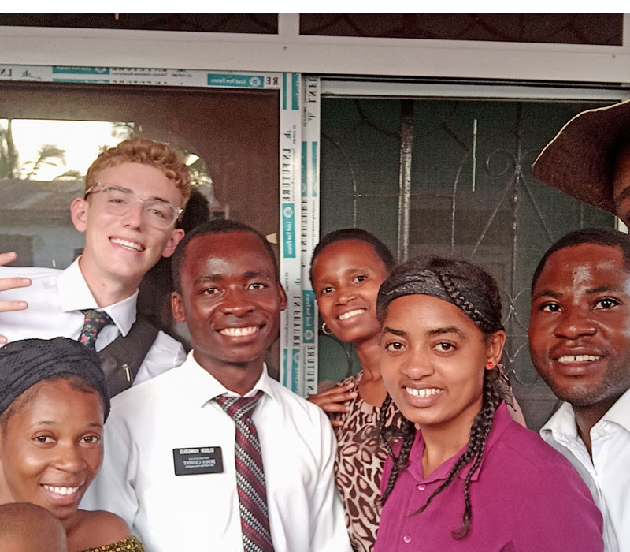

Potential Graduates: How can we reform our academic system, to maximise potential graduates.?
Potential Pupil to Unfit students
Pupils are normally trained under the supervision of teachers and in some environments by the guardian of matrons and patrons. Pupils begin their studies at standard one to form six, this is the formal system in Tanzania. This stage is called Primary and Secondary level. In this stage the ministry for education affairs, prepares syllabus and exams. So the pupils are tested through national exams in several stages along academic years.
 So the qualified pupils are the best products of National academic system. In primary and Secondary level, Teachers roll is to teach pupils the provided syllabus, and the Necta roll is to test the pupils, and select the best products according to a national academic standard.
So the qualified pupils are the best products of National academic system. In primary and Secondary level, Teachers roll is to teach pupils the provided syllabus, and the Necta roll is to test the pupils, and select the best products according to a national academic standard.
After the last national exam of form six, Pupils are subjected to University education, In this stage is where the pupils become Students. In university Students undergo different program according to their specialization. Some spend three years, four years and some faculty five years. The society expectations on graduates is simply and squarely to have a potential graduates, trained and fit to solve challenges in society.
Public standard.
In primary and secondary stage the trainer is not the examiner, the trainers (Teacher) have the roll to teach the syllabus and the examiner (Necta) has the roll to test the product’s quality. So the standard of qualified pupil is not tested by the teacher, in this process the test is not only for the pupil but also the quality of school performance and teachers effort as well as student’s ability. The test is usually basses on the public system standard.
Personal standard.
In university stage the trainer is also the examiner, which means the student is qualified on the standard of the lecture, so the competent the lecture is, the competent the student will become. Therefor the test is usually based on personal standard. This system creates possibilities of producing the incompetent graduate, unfit to solve not only the public challenges but also their own challenges. This graduates are simply called Unfit students.
Example: How many students fail after being join some of the post graduate programs? Law school, CPA programs and other related qualifications ?. This is because in these programs, the examiner is different from the trainer, this system give no chance to a student to seek favors from their lectures or have negative association with their trainers. This is because a lecture can only test what he/she has taught the student, and not what is supposed to be covered by the students in that particular program.
Is university a brain washer or cultivator?.
According to the words of Kishimba (MP) “It is not logical with current education system, where you separate parents with their children for 20 years, then at the end you give them a piece of paper called certificate, then tell them to find a job. how can he manage?. This child does not know how to cook, has forgotten every home works then you expect him/her to do anything?.” Then he added by saying …
“The most productive child in current days, is the one who drooped school at standard seven for whatever reason, followed by form four dropout, then form six. But these university graduates, at our place we call them Viazi vilivyokataa kuiva. This is because they are not capable of doing anything in community, not even farming.” he added that…
“I advise that the universities must firstly seek job opportunity, before admission of students, then when the students pay for school fees, they are assured of job, after done their studies.”
Quicky approach.
Therefor there should be a national standard for evaluation of university students as well as lectures. This evaluation (Exams) should be prepared by a special board/council to test all university students, at each completion of their courses. This will help to ensure both parties (lecture and students) fulfill their duties knowing that, at the end there will be a national qualifying exam, that will qualify only students with the National academic standards. not only from what we have been taught but also on what is supposed to be covered in their course programs.
University Medical Programs.
The current University Medical Programs, are among those potential ongoing method. Upon which we can take some references to reform other university professional programs.
During the training of a medical Doctors, the students spend three years in class for theory, and two years of field, plus one year of internship. during these three divided periods, the students acquire full knowledge that make them fit in real practices environment.
- Begin with first three years when students learn theory in class, Followed by two years of clinical field, where students get contact with patients under the clinical supervisors, then the students finalize their course by attending one year of Internship, here is when a student practice under the provisional licence, this stage is when they get both, health sector management skills, as well as direct contact with patient, under little supervision, after internship, a students is now entitled to a full practicing licence and qualified to be employed.
It is true that we are all aware of the competence of our health department’s workers, despite their working environments challenges. This professional class is the one of few professionals, that come out of collage with at least the ability to perform their professional skills.
Potential Method.
When we look at the University Medical Programs, we find that at the end of medical all courses, there is only one Examiner that test all students, until you pass Medical school exam, is when you will get a practicing licence, apart from that you will just remain a trained MD. The whole process is to ensure that, the outgoing product is capable of delivering the public expectations.

What about others.
On another hand, we have several Professional programs in university, these programs produces graduates each academic year,as many as they are. But the question remains, Are they capable of delivering what is expected?.
Before you answer that question, firstly you must ask your self this question, Are you the quality of the expected professional?. If “Yes”, then you are safe but if “No”, then there is one thing involves, Did you intend to learn that course or was only option you had?. If Yes, you are in danger because the next question will we, why aren’t you the quality expected professional?, but if was only the option, then you are the victim of the society blindness.
May be you may have as many as good answers to those questions, but the most critical question is this, When you take a serious self evaluation, at a time you finished form six and at a time you finished university, at which period you declare you were the best product?. Was it when you got div 1.3 or when you got GPA 3.1?. I know if you will be honest to your self then the truth is that at a time you finish advance education, you can teach secondary studies even without referring to books, but once you have done with university, the reverse will be the case.
Make Agriculture programs potential.
We live in the land where most of commentators call it, “Eden of Africa”, which means a place where you can grow whatever crop through out the year by investing in irrigation system. So my concern to this topic was attracted to make some highlight on Agricultural courses in university.
We have seen how medical programs are been conducted in universities, and how potential they produce and contribute to the community all along the training period, this means,the MD students begin to contribute to the community while they are still enrolled. This process give the trainee confidence and real experience of how they can mange work environments challenges. And when they graduate from collage they expect nothing but to go and work in the same field they were trained.
Therefor in agriculture programs, we may put students in classes for 3 semesters, where a students get half marks of the whole course, then after three years of theory, If students qualify to continue with course, the the other half marks shall be attained after they are successfully participate physically in field, this means they will be distributed in every region of the country, to produce and crops for the period of three semesters as well as to help local farmers tackle their challenges.
The field program shall be conducted through the help of every government department, from security to the basic shelter from the Agriculture Ministry. And when they qualify they are now awarded their degrees. This method will make them familiar with the real working environment, as well as give them motive to get redness to work after they have done their studies.
Also during these three semesters of field, the government will benefit with their labor, by reducing food shortage in the country. The field they will be taken to produce shall be both the research study areas as well as government food program, through this method, we shall prepare the potential graduates as well as labor power during their studies.
My view point.
I am not saying University are to be ignored, but until the spring is full, it is when the streams will flow. In other words i mean until there will be full accountability in universities, start with lectures to students, and the examiner’s body, the product will remain the very same and shall always be the quality of a person’s standards and not public expectation which is communal academic standards.
We should not always blame the windmill, because the windmill always move on the direction of the wind, therefor we must deal with the wind and the windmill shall change the direction. Lets adopt the method from Medical Programs to all courses, and i am sure we shall have the graduates with potential in current challenges.